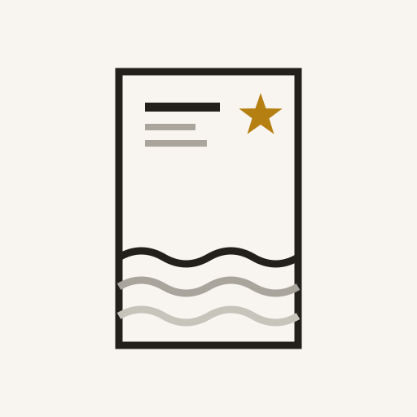
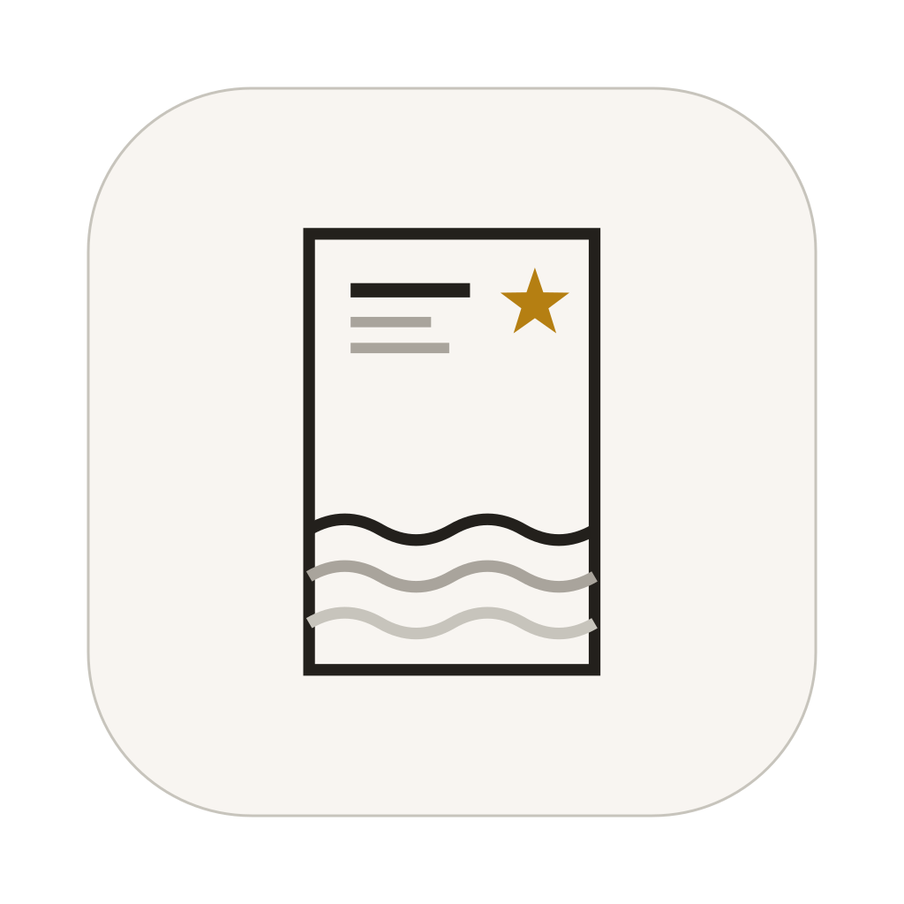

三道墨痕是退潮后留下的层理，也像一本刊物里沉静排列的正文行。
琥珀竖片是被拾起的旧划线：唯一的强调色只承担“当前值得重遇”的语义。
底线保留一次克制的折返，像潮线、书脊，也像记忆重新连接时留下的痕迹。
不是“装知识的卡片”，而是退潮后重新显露的一条痕迹。标志把潮滩沉积层、刊物正文行与每日回顾中的一枚卡片压缩为一个可在 16px 清晰辨认的符号。

三道墨痕是退潮后留下的层理，也像一本刊物里沉静排列的正文行。
琥珀竖片是被拾起的旧划线：唯一的强调色只承担“当前值得重遇”的语义。
底线保留一次克制的折返，像潮线、书脊，也像记忆重新连接时留下的痕迹。
